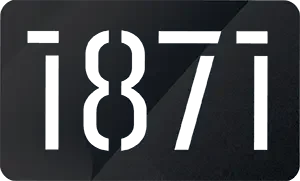
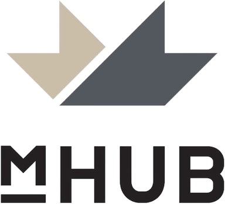
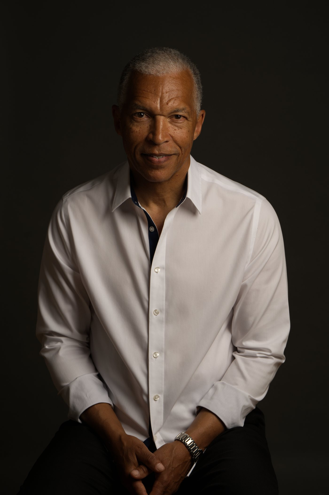
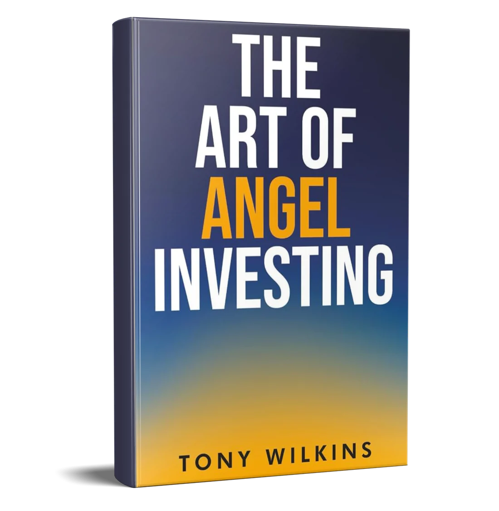
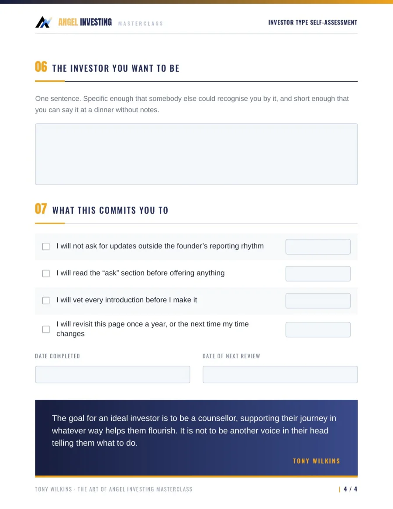
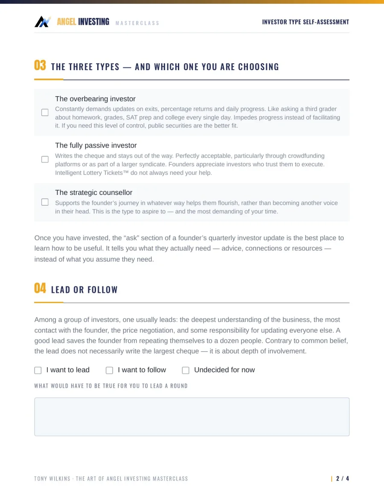
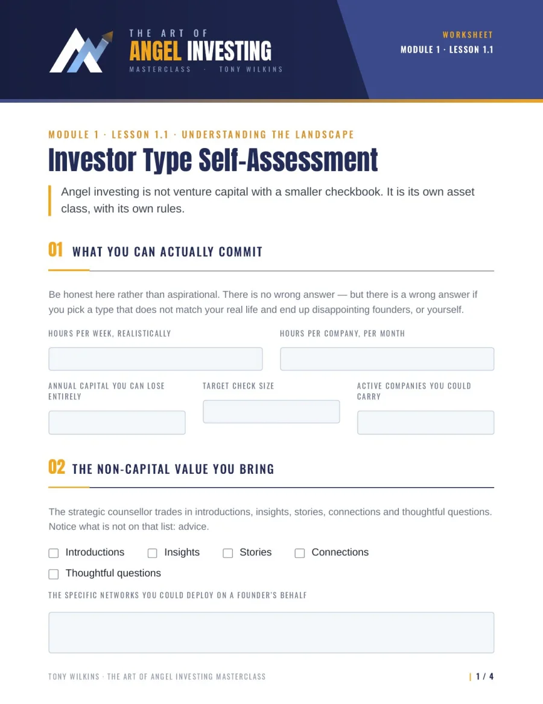
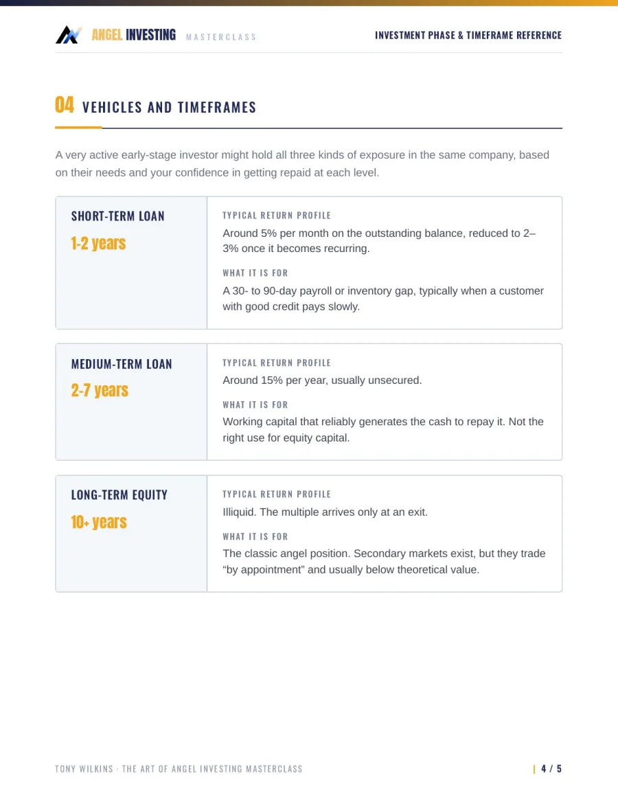
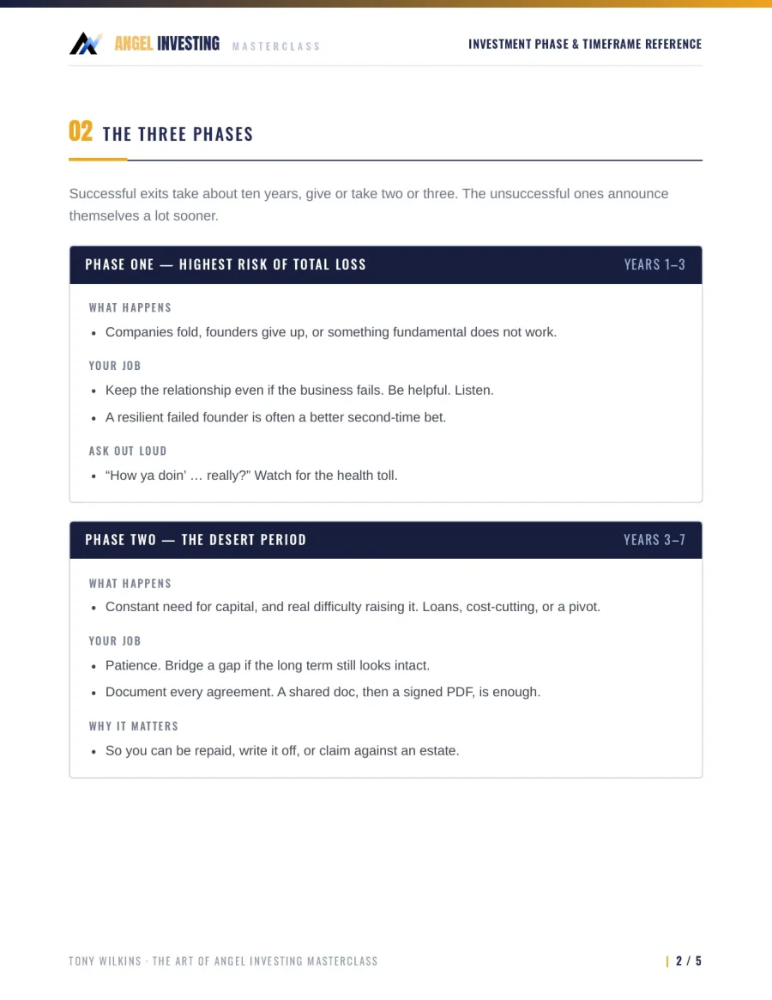
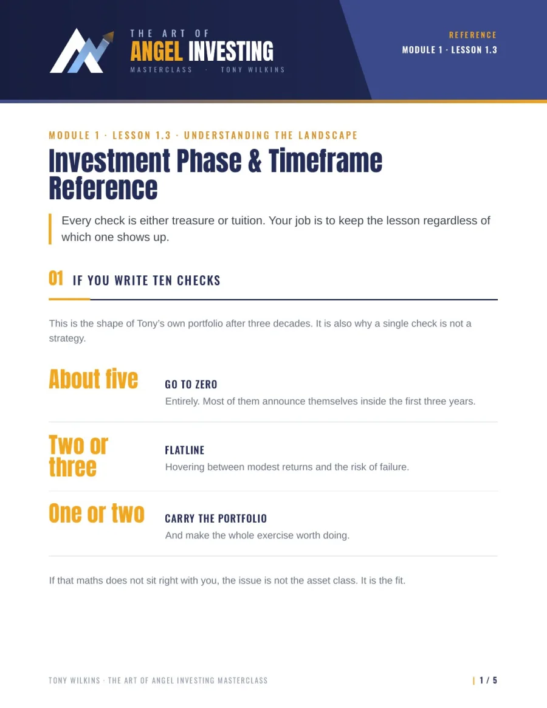

$27Digital Book + Toolkit
How Professionals Are Making Their First Angel Investment In 30 Days.Starting With $100.
Tony Wilkins has written 72 startup checks since 1991. His book and three Masterclass tools take you from "what kind of angel am I?" to your first check, picked and tracked. No fund. No MBA. No hot tips.
Start with the framework Tony wishes he had.
Get The Book + Toolkit$27 one-time. Instant download, 30-day money-back guarantee.
- The full digital book
- 3 tools from the Masterclass
- Built from 72 investments
Tony is affiliated with


Most Angel Investors LearnBy Losing Money First.
There is no CFA for angel investing.
No structured roadmap.
No proven curriculum.
The reality? Many early-stage investments fail. The investors who succeed aren't the ones who avoid losses entirely. They're the ones who approach every investment with a repeatable system.
Without a framework, most new angels
- 01
Write checks on excitement, not conviction
A great pitch feels like a great investment. It usually isn't the same thing.
- 02
Skip proper diligence
Without a checklist, the step that would have caught the problem is the one that gets skipped.
- 03
Follow the crowd instead of their own judgment
Someone else's conviction is not a philosophy, and it won't be there when the round goes sideways.
- 04
Learn the expensive lessons after the money is gone
Tuition is fine. Paying it without keeping the lesson is the real loss.
The method inside the book
The Philosophy-First Framework.
Tony doesn't teach you to chase deals. He teaches you to decide who you are as an investor first, so every check after that follows the same rules.
- 01
Philosophy
Know your why
Build a personal investment philosophy that guides every decision you make.
Investor Type Self-Assessment - 02
Founders
Read the person
Evaluate founders beyond the pitch deck, starting with whether they can be coached.
Inside the book - 03
Decision
Diligence, then decide
Run the same diligence process on every deal and make the call with conviction.
Phase & Timeframe Reference - 04
Portfolio
Manage it like a professional
Track every check, thesis and distribution, and review it every quarter, not on emotion.
Portfolio Tracking Spreadsheet
$27 one-time. Instant download, 30-day money-back guarantee.

Investing since 1991Investor, advisor, coach
Meet Tony Wilkins.
Angel investor, advisor, executive coach and startup mentor
Tony wrote his first check in 1991. Since then he has made 72 investments in early-stage founders. Some grew into life-changing returns. Plenty of them went to zero. The winners far outnumbered the losses, but both taught him what's in this book.
Across market booms, crashes and multiple funding cycles, he built a philosophy-first approach focused on judgment, discipline and long-term thinking. There was no CFA, CPA or MBA for angel investing and no clear roadmap, so he made one.
This is the framework he wishes he had when he wrote his first check.
Trusted By Investors And Founders.
"Tony turns years of hard-earned investing experience into clear, actionable insight. If you're starting out in angel investing, he shortens the learning curve in a way very few people can. Tony's biggest impact on me was helping me focus on signal over noise, especially around founders, portfolio construction, and disciplined decision-making."
"Tony Wilkins is one of the most thoughtful and insightful angel investors I know. He understands opportunities, their associated risks, and their potential upside exceptionally well. I have invested with Tony before, have been pleased with the experience, and would gladly invest with him again."
Everything included
Everything You Get For One Price.
One purchase, one download. The book teaches you how Tony thinks. The toolkit makes you do it on a real deal.
The Art of Angel Investing
Digital book
Tony's philosophy-first approach to angel investing, the book his whole program is built on. Not about chasing deals. About building the judgment to tell which risks are worth taking.
- How the asset class actually works, and why it isn't venture capital with a smaller checkbook
- How to develop your own investment philosophy
- Frameworks for assessing founders and opportunities
- A disciplined approach to risk and decision-making
- Practical lessons from 72 real angel investments
The Investor Toolkit
3 tools from Tony's MasterclassThe same tools Tony's Masterclass students work from. Real pages, shown below.
-



Investor Type Self-Assessment
Decide what kind of angel you will be before a founder decides for you. Honest about your hours, your capital and your temperament.
- What you can actually commit: hours, check size, capital you can lose entirely
- The three investor types, and why Tony says to aspire to the strategic counsellor
- Lead or follow, the honest fit test, and the one-sentence investor you want to be
-



Investment Phase & Timeframe Reference
What really happens to a check over ten years, and what your job is in each stretch of it.
- If you write ten checks: the shape of Tony's own portfolio after three decades
- The three phases, years 1-3, 3-7 and 8+, and your job in each
- Loans versus equity, plus SAFEs, convertible notes, preferred stock and cap tables in plain English
-
The Art of Angel Investing · Masterclass · Tony WilkinsPortfolio registerOne row per investment. Blue cells are yours to fill in.
Company Date Amount Vehicle Round Phase Multiple Example Co. 2024-03-14 $25,000 SAFE Seed Years 1-3 10.0x PortfolioThesisContactsDistributionsTax & cost basisDocumentsQuarterly notesPortfolio Tracking Spreadsheet
Professional-grade records for every check you write, built around the one field that matters most: your thesis, written on the day you invest.
- A master register: vehicle, round, cost basis, phase, multiple to date
- Thesis, contacts, distributions and your own document copies
- Tax and cost basis records, plus a quarterly review log
- 01Check out securelyOne page, one payment of $27.
- 02Download everythingThe book and all three tools arrive instantly.
- 03Start with Tool 01Pick your investor type, then read the book with the spreadsheet open beside you.
Treasure Or Tuition. Never Lose The Lesson.
This book won't eliminate losses. Nothing can. It will help you avoid the avoidable ones. If it's not for you, email us within 30 days for a full refund.
Built For Three Kinds Of Investors.
An aspiring angel
You've been circling the idea for a year, assuming the door is locked. It isn't. You can start from $100.
A professional building wealth
Jobs aren't for life and retirement may last decades. You want an asset class that keeps you current as AI changes every industry.
A check or two in
You invested on excitement and want a system you can repeat on every deal from here.
- A hot tip on the next startup to back
- Promised returns. Nobody can honestly offer them
- Someone to make your decisions for you
- Legal, tax or personal investment advice
Questions